Veröffentlichung und Export
Publishing-and-Export
- 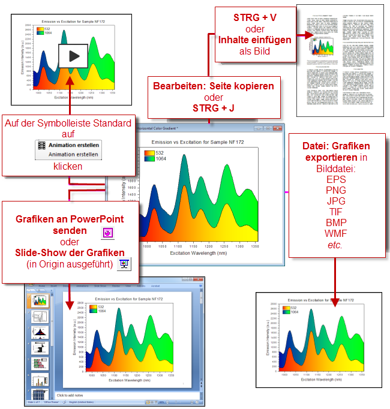
Die Masterseite
Die Funktion Masterseite wird dazu verwendet, eine oder mehrere allgemeine Objekte zu den exportierten oder gedruckten Diagrammen hinzuzufügen. Verwenden Sie die Masterseite, um eine Reihe von Eigenschaften und Objekten -- ein benutzerdefinierter Hintergrund, ein Unternehmenslogo, Textbeschriftungen, Bilder etc. -- zu ausgewählten Diagrammfenstern in Ihrem Projekt hinzuzufügen.
- 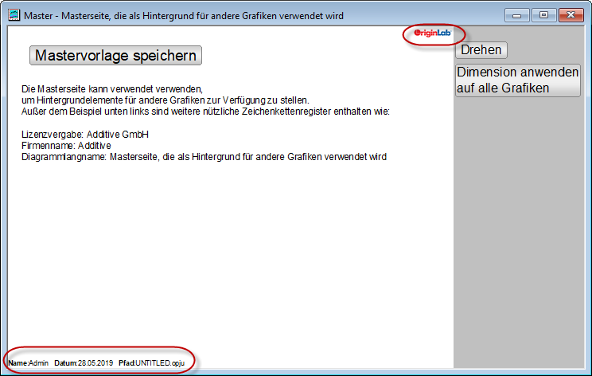
Um diese Funktion zu nutzen, müssen Sie zuerst Ihre Masterseite erstellen. Die Masterseite sollte die Eigenschaften und Objekte enthalten, die Sie in anderen Diagrammfenstern anzeigen lassen möchten:
- Wählen Sie im Menü Datei: Neu: Masterseite. Wenn Sie sich beim Auswählen des Menübefehls nicht im Hauptverzeichnis des Projekts befinden, werden Sie gefragt, ob Sie in das Hauptverzeichnis wechseln möchten.
- Passen Sie die Mastervorlage benutzerdefiniert an. Beachten Sie, dass die Kommentare, die unter der Schaltfläche Mastervorlage speichern gezeigt werden, "verborgen" sind und nicht auf Ihre Diagrammfenster angewendet werden.
- Klicken Sie auf die Schaltfläche Mastervorlage speichern. Wenn Sie speichern, wird die Mastervorlage im Anwenderdateiordner als "Name des aktiven Fensters".otpu (z. B. "C:\Users\YourName\Dokumente\OriginLab\Anwenderdateien\Master.otpu") gespeichert.
Dinge, die Sie über die Masterseite wissen sollten:
- Masterelemente werden nur in Diagrammseiten der gleichen Dimensionen als Vorlage gezeigt. Dimension auf alle Diagramme anwenden wendet die Seitendimensionen der Mastervorlage auf alle Diagramme mit dem gleichen Seitenverhältnis an.
- Wenn Sie ein Diagramm erstellen und die Seitengröße modifizieren, Datei: Neu: Masterseite wählen und eine Mastervorlage in den Arbeitsbereich laden, dann wird die Mastervorlage mit den Seitenabmessungen Ihrer modifizierten Diagrammseite geladen.
- Die Schaltfläche Drehen vertauscht die Seitendimensionen der Mastervorlage (die Ausrichtung Hoch- und Querformat wird gewechselt).
- Wenn Sie auf Dimension auf alle Diagramme anwenden klicken, werden Sie aufgefordert, die Abmessungen nur auf Diagramme mit dem gleichen Seitenverhältnis anzuwenden oder auf alle Diagramme mit der gleichen Ausrichtung (Hoch- oder Querformat).
- Die Elemente der Masterseite auf einem Diagramm mit der Ausrichtung Hochformat werden nicht auf einem Diagramm mit der Ausrichtung Querformat gezeigt und umgekehrt.
- Wenn Sie KEINE Masterelemente verwenden, legt Bearbeiten: Seite kopieren (STRG + J) ein mit OLE bearbeitbare Origin-Diagrammobjekt in der Zwischenablage ab. Wenn Sie Masterelemente verwenden, legt Bearbeiten: Seite kopieren ein Bild in der Zwischenablage ab. Der Dialog Diagramm als Bild kopieren wird geöffnet und Sie werden gebeten, die Bildeinstellungen zu übernehmen bzw. anzupassen, bevor Sie auf Kopieren klicken.
- Wenn ein Diagramm Masterelemente verwendet, unterstützt Grafiken an PowerPoint senden nicht die Funktion Diagramme als eingebettetes Objekt einfügen. Stattdessen verwendet Diagramme als Bild einfügen, das Masterelemente unterstützt.
- Es gibt eine Methode, um Masterelemente selektiv in Ihrer exportierten oder gedruckten Seite auszuschließen. Jedes Objekt, von dem Sie nicht möchten, dass es auf der exportierten/gedruckten Seite gezeigt wird, sollte mit "NoExport" beginnen (öffnen Sie z. B. den Dialog Eigenschaften des Pfeilobjekts und benennen Sie auf der Registerkarte Programmierung "Arrow" in "NoExport_Arrow" um).
- Wenn Sie Ihre Masterseite benutzerdefiniert anpassen und im Anwenderdateiordner speichern, laden Sie beim nächsten Mal, wenn Sie Datei: Neu: Masterseite wählen, Ihre benutzerdefinierte Vorlage.
- Wenn Sie die Masterlelemente nicht im Arbeitsbereich zeigen möchten, klicken Sie auf Ansicht: Zeigen: Masterelemente und entfernen das Häkchen. Das exportierte Diagramm enthält noch die Masterelemente (sie werden nur nicht mehr im Arbeitsbereich angezeigt).
- Wenn Sie die Masterelemente aus einem Diagramm entfernen möchten, sowohl im Arbeitsbereich als auch in den exportierten Bildern, klicken Sie im Menü auf Format: Seite und die Registerkarte Anzeige und deaktivieren Sie das Kontrollkästchen Masterelemente verwenden.
 | Sie könnten das Hilfsmittel Text verwenden, um Projekt- und Systeminformationen zu Ihrer Mastervorlage als statische Textobjekte hinzuzufügen, aber da es bei einer Vorlage um ihre Wiederverwendung geht, ziehen Sie doch die "Softcodierung" der Informationen in Ihren Textbeschriftungen in Erwägung. Weitere Informationen finden Sie unter folgenden Themen:
|
Dialog Randverschiebung für Export
Standard ist, dass die Ränder Ihrer kopierten oder exportierten Diagramme durch den Umfang in der Gruppe Seiteneinstellungen kopieren unter Einstellungen: Optionen (Kopieren) oder durch den Zweig Exporteinstellungen des Dialog Grafiken exportieren (Export) bestimmt werden. Sie können die Standardränder interaktiv über den Dialog Randverschiebung für Export modifizieren.
- 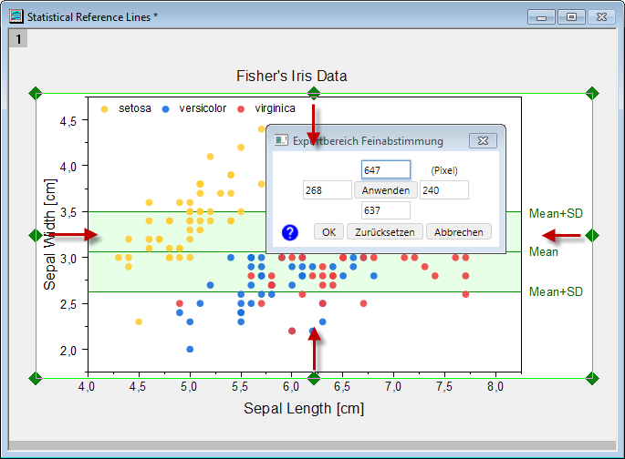
- Klicken Sie auf das Diagrammfenster (um es zu aktivieren) und wählen Sie Bearbeiten: Randverschiebung für Export. Der Dialog Randverschiebung für Export wird geöffnet.
- Ziehen Sie an den blauen Auswahlelementen, die an den Seitenrändern angezeigt werden, oder geben Sie die Werte in die Dialogbearbeitungsfelder ein. Klicken Sie auf Anwenden.
Seite an Layer anpassen und Layer an Seite anpassen
Es gibt zwei kleine Dialoge, die vor dem Exportieren hilfreich beim Entfernen von weißer Fläche oder Platzieren eines Randes um Ihr Diagramm herum sind:
- Seite an Layer anpassen: Wählen Sie Grafik: Seite an Layer anpassen, um den Dialog pfit2l zu öffnen.
- Layer an Seite anpassen: Wählen Sie Grafik: Layer an Seite anpassen, um den Dialog gfitp zu öffnen.
- 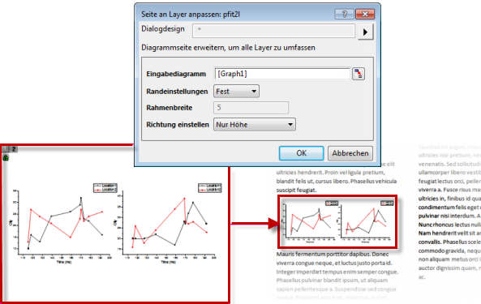
Beide Dialoge können verwendet werden, um die weiße Fläche zu entfernen. Beide können die Größe verändern, mit und ohne Änderung der Seitenverhältnisse des Diagramms. Sie können die Dokumentation für beide Dialoge lesen, um zu entscheiden, welcher am besten für Sie geeignet ist. Grundsätzlich kommt es aber nur darauf an, ob Sie eine bestimmte Seitengröße beibehalten müssen. Falls ja, eignet sich wahrscheinlich Layer an Seite anpassen besser. Falls nein, können Sie beide Dialoge verwenden.
Diagramme in andere Anwendungen kopieren und einfügen
Diagramme, kopieren/einfügen oder einbetten Diagramme kopieren/einfügen Diagramme einbetten, Anwendungen von Drittanbietern Es gibt zwei Möglichkeiten, wie Sie Origin-Diagramme in Dateien anderer Anwendungen einbinden können (z. B. Microsoft Words .docx-Dateien ):
- Als ein Bild
- Als ein bearbeitbares OLE-DiagrammobjektObjektverknüpfung und Einbettung (OLE)
Wenn Sie als ein Bild einfügen, fügen Sie ein statisches Objekt ein. In MS Word zum Beispiel können Sie das Bild mit Words Bildbearbeitungstools modifizieren, aber Sie können keine Bearbeitungen an dem Diagramm in Origin vornehmen und das Diagramm in Word dann aktualisieren wollen (Sie können nur das existierende Bild löschen und es durch ein neues ersetzen).
Wenn Sie im Gegensatz dazu ein bearbeitbares Diagrammobjekt einfügen, können Sie später in der Hostanwendung doppelt auf das Objekt klicken, um eine neue Instanz von Origin zu starten. Das Diagramm und jegliche zugehörige Datenblätter stehen für die Bearbeitung zur Verfügung. Nach der Bearbeitung verwenden Sie im Menü Datei: Beenden und zu ... zurückkehren, um das eingebettete Objekt zu aktualisieren, Origin zu schließen und zu der Zielanwendung zurückzukehren.
Diagramm als Bild kopieren
- Klicken Sie auf Ihr Origin-Diagramm, um es zu aktivieren. Dann...
- Wählen Sie Bearbeiten: Diagramm als Bild kopieren (Strg+Alt+J). Alternativ klicken Sie auf das Diagrammfenster in der Nähe des Seitenrands und dann auf die Schaltfläche Diagramm als Bild kopieren auf der Minisymbolleiste.
- 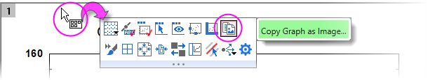
- Wählen Sie in Ihrer Hostanwendung Einfügen oder drücken Sie Strg+V.
Beim Kopieren des Diagramms als ein Bild (Strg+Alt+J) haben Sie nun eine Auswahl von Bildformaten (PNG, EMF, DIB, HTML, JPG). Außerdem können Sie schnelle Größenanpassungen vornehmen und die Hintergrundtransparenz festlegen (PNG). Der Dialog Diagramm als Bild kopieren (copyimg) schließt das Bedienelement Dialogdesign ein, das die Wiederholung der <zuletzt verwendeten> Einstellungen, das Speichern der aktuellen Einstellungen als Standard mit Als <Standard> speichern oder das Speichern von Einstellungen als ein benanntes Design (Speichern unter...) ermöglicht.
- 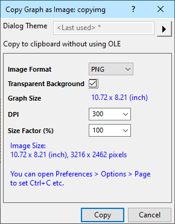
| Es gibt das Bedienelement Kopieren auf der Registerkarte Einstellungen: Optionen: Seite, mit dem Sie die Tastenkombination Strg+C verwenden können, um entweder das Diagramm als Bild zu kopieren <zuletzt verwendet> oder die Seite zu kopieren (Strg+J) (d. h. "bearbeitbares OLE-Diagrammobjekt"). Dies ermöglicht Ihnen, den Dialog Diagramm als Bild kopieren zu umgehen und das Positionieren eines standardisierten Bildes in der Zwischenablage mit Strg+C zu beschleunigen. |
Diagramm als bearbeitbares OLE-Diagrammobjekt kopieren
- Wählen Sie Bearbeiten: Seite kopieren (Strg+J).
- Wählen Sie in Ihrer Hostanwendung Einfügen oder drücken Sie Strg+V.
Diagramme für Präsentation bzw. Export organisieren
Wenn Ihre Origin-Projektdatei viele Diagramme enthält, die Sie exportieren oder in einer Origin-Slideshow verwenden möchten, können Sie dem Vorgang vereinfachen, indem Sie Shortcuts zu Ihren Diagrammen in einem Favoritenordner des Projekt Explorers einfügen und sie dort ordnen:
- Klicken Sie mit der rechten Maustaste auf ein Fenster und wählen Sie Shortcuts zu Favoriten hinzufügen. Auf diese Weise wird ein Shortcut zu jedem Diagrammfenster hinzugefügt und zwar zu einem neuen Unterordner Favoriten (zu sehen im Projekt Explorer).
- Beim Sende von Diagrammen an PowerPoint oder Erstellen einer Origin-Slideshow können Sie (1) die Folienreihenfolge in dem entsprechenden Dialog festlegen oder (2) die Folienreihenfolge gemäß dieser Vorgehensweise festlegen.
Die Layoutseite
Eine Layoutseite ist, wie der Name schon sagt, ein Fenster, mit dem sich die verschiedenen Elemente für eine Veröffentlichung oder den Export gut anordnen lassen. Verwenden Sie sie, um Diagramme, Ergebnistabellen, Textobjekte etc. auf einem einzelnen Bedienfeld zusammenzufügen.

Normalerweise beginnen Sie, indem Sie ein leeres Bedienfeld öffnen:
- Klicken Sie auf die Schaltfläche Neues Layout in der Symbolleiste Standard.
- Klicken Sie mit der rechten Maustaste auf das leere Layout, um Inhalte der Zwischenablage einzufügen, Text hinzuzufügen, Bilder aus Dateien einzufügen, Diagramme und Tabellen hinzuzufügen etc.
- Wenn Sie ein Bild aus einer Datei einfügen, klicken Sie mit der rechten Maustaste in den Bereich, in den Sie einfügen möchten. Beim Hinzufügen von Diagrammen oder Arbeitsblättern wählen Sie ein Fenster im Browser und ziehen Sie mit der Maus einen Bereich im Layout auf. Beachten Sie, dass hinzugefügte Objekte durch Ziehen mit der Maus verschoben oder in der Größe verändert werden können.
- Weiterhin können Sie Bearbeitungen an eingefügten Bildern vornehmen, indem Sie doppelt auf das Bild klicken. Das Bild wird im Bildfenster geöffnet.
- Weiterhin können Sie Bearbeitungen an dem Diagramm vornehmen, indem Sie doppelt auf das eingefügte Diagrammobjekt klicken. Dadurch wird das Quelldiagramm zur Bearbeitung geöffnet. Bearbeitungen am Quelldiagramm werden auf der Layoutseite aktualisiert.
- Eingefügte Tabellen können durch Doppelklick auf das Tabellenobjekt bearbeitet werden. Stilanpassungen können vorgenommen werden, indem Sie das Tabellenobjekt auswählen und die verfügbaren Schaltflächen der Minisymbolleiste verwenden.
- Beachten Sie, dass einzelne Elemente auf der Layoutseite mit Hilfe der Symbolleistensschaltflächen von Objekt bearbeiten ausgerichtet werden können.

| Das Exportieren der Layoutseiten in .SVG-Dateien wird unterstützt. Beim Hinzufügen von Diagrammen zum Layout wählen Sie Diagramm hinzufügen im Kontextmenü des Layouts, und Elemente Ihrer SVG-Datei (z. B. Text) werden in Anwendungen wie Inkscape oder Adobe Illustrator bearbeitbar. |
Mehr zur Layoutseite finden Sie unter Das Layoutseitenfenster verwenden in der Origin-Hilfe.
Diagramme in Layout einfügen
Als eine Alternative zum manuellen Erstellen von Layouts bietet Origin ein Hilfsmittel, das ausgewählte Diagramme auf einer einzelnen Layoutseite mit gleichen Abständen zusammengefügt. In diesem Fall sind zusammengefügte Diagramme Bilder und daher nicht mit der in Schritt #3 des vorherigen Abschnitts beschriebenen Methode bearbeitbar. Falls keine weiteren Diagrammbearbeitungen erforderlich sind, können Sie diese Methode jedoch verwenden, um schnell ein attraktiv aussehendes Layout zu erstellen.
- 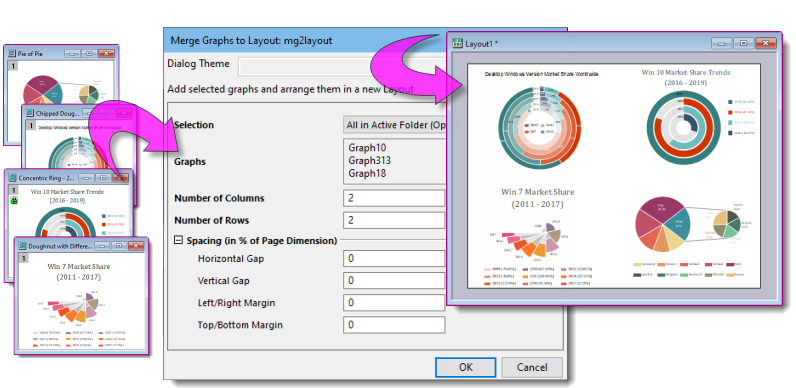
Um Diagrammbilder in einem einzelnen Layout zusammenzufügen:
- Klicken Sie bei aktivem Diagrammfenster auf Grafik: Diagramm in Layout einfügen: Dialog öffnen.
- Verwenden Sie die Auswahlliste Auswahl, um festzulegen, wie Sie die Diagramme auswählen. Um einzelne Diagramm zu wählen, wählen Sie Festgelegt und verwenden die Schaltfläche Durchsuchen neben Diagramme, um den Diagrammbrowser zu öffnen und die Diagramme auszuwählen.
| Verwenden Sie den Menübefehl Seite an Objekte anpassen (Format: Seite an Objekte anpassen), um einen einheitlichen Rand für die aktive Layoutseite zu übernehmen. Dies funktioniert genauso wie das zuvor erwähnte Seite an Layer anpassen dies für Diagrammfenster tut. |
Diagramme und Layoutseiten in eine Bilddatei exportieren
Grafiken, ExportierenGrafiken exportieren/Layoutseiten Layoutseiten, Exportieren
Origin 2021b fügte eine vereinfachte Diagrammexportroutine als Ergänzung zur existierenden Diagrammexportroutine hinzu:
- Datei: Grafik exportieren: Wenn Sie einfach ein oder zwei Diagramme in einem von mehreren gängigen Bildformaten (PNG, BMP, JPEG, TIFF, EMF) exportieren möchten und nur minimale Kontrolle über die Bildgröße benötigen, ist diese Routine schnell und einfach.
- Datei: Grafik exportieren (Erweitert): Wenn Sie Diagramme per Stapelverarbeitung (z. B. Alle in aktivem Ordner, Alle in Projekt etc.) oder in Vektortypen wie PDF oder EPS exportieren möchten, verwenden Sie diese Routine. Der Dialog unterstützt Ausgeben in einem festgelegten Pfad, automatisches Benennen, Anwenden der Einstellungen des Entwurfsmodus auf exportierte Diagramme plus das Festlegen von Rand, Bildgröße und weitere dateitypspezifische Einstellungen.
| Seit Origin 2023 verfügen die folgenden Exportdialoge einen mit Datums-/Zeitstempel versehenen anklickbaren Link zum Meldungsprotokoll. Klicken Sie auf den Link, um die Datei mit Hilfe eines internen Origin-Viewers zu öffnen (siehen unten):
- 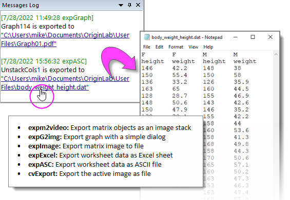
Zusätzlich werden zwei Systemvariablen hinzugefügt, um die Ausgabe des Meldungsprotokolls für Bilder zu verwalten:
- @VID wird hinzugefügt, um einen Bildviewer (Raster, EMF) auszuwählen: 1 = Origin Viewer verwenden (Standard); 0 = Standardapplikation des Systems verwenden
- @MSG wird hinzugefügt, um zu steuern, was im Meldungsprotokoll ausgegeben wird: 0 = Datei und Link ausgeben (Standard); 1 = nur Link ausgeben; -1 = Meldungsausgabe deaktivieren.
Um den Dateispeicherort im Windows Explorer zu öffnen (ohne die Datei zu öffnen):
- Klicken Sie mit der rechten Maustaste auf einen Link und wählen Sie Speicherort der Datei öffnen oder drücken Sie die Strg-Taste, während Sie auf den Link klicken.
|
Datei: Grafik exportieren
Datei: Grafik exportieren (X-Funktion = expG2img) ist eine vereinfachte Routine zum Exportieren der aktiven Diagrammseite in eines der folgenden Formate: PNG, BMP, JPEG, TIFF oder EMF. Sie bietet nicht das Level von Kontrolle oder Flexibilität wie Datei: Grafik exportieren (Erweitert) (nächster Abschnitt), aber sie funktioniert gut für den einfachen Export von individuellen Diagrammseiten.
Um ein Diagramm oder eine Layoutseite mit Hilfe des vereinfachten Dialogs expG2img in ein Rasterbild zu exportieren:
- Wenn ein Diagrammfenster aktiv ist, wählen Sie Datei: Grafik exportieren.
- Setzen Sie für EMF-Bilder einen Größenfaktor relativ zur Bildgröße. Er wird unten im Dialog angegeben. Wählen Sie für Rasterformate eine DPI-Einstellung für die Ausgabe. Alternativ deaktivieren Sie das Kontrollkästchen Auto und geben Sie eine Breite in Pixeln ein. Das Klicken auf Vorschau ruft das zu exportierende Diagramm in einem internen Viewer an.
- 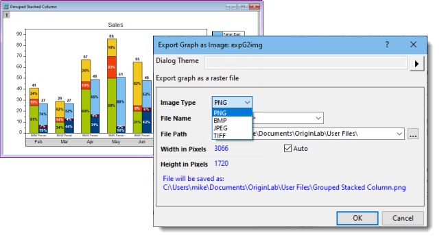
Datei: Grafik exportieren (Erweitert)
Datei: Grafik exportieren (Erweitert) (X-Funktion = expGraph) ist Origins primäres Hilfsmittel zum Exportieren von Diagrammen und Layoutseiten. Es unterstützt die Raster- oder Vektorausgabe, einen flexiblen mehrseitigen Export (z. B. Alle in aktivem Ordner), DPI- und Entwurfsmodus und so weiter.
Um ein Diagramm oder eine Layoutseite als eine Bilddatei zu exportieren:
- Wählen Sie im Menü Datei: Grafik exportieren (Erweitert).
- 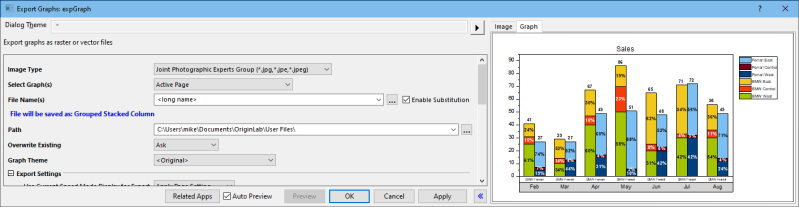
Die Routine expGraph exportiert Diagramme in einem von 15 Dateiformaten:
| Rasterformate |
BMP, GIF, JPG, PCX, PNG, TGA, PSD, TIF
| Wenn Sie Bildtyp = TIF/TIFF auswählen und mehrere Diagramme für den Export (z. B. Alle im aktiven Ordner), wird ein Kontrollkästchen Als TIF mit mehreren Frames exportieren zum Dialog hinzugefügt. Aktivieren Sie dieses Kontrollkästchen, um ausgewählte Diagrammfenster als ein einzelnes TIF-Bild (TIF-Stapel) zu exportieren. |
|
| Vektorformate |
CGM, DXF, EPS, EMF, PDF, SVG, WMF |
Exporteinstellungen in einem Design speichern
Wie bei den meisten Origin-Dialogen können Sie Ihre Einstellungen für den Diagrammexport in einem Dialogdesign zur wiederholten Nutzung speichern.

Sobald Sie Ihre Exporteinstellungen bestimmt haben:
- Klicken Sie auf die Ausklappschaltfläche rechts von Dialogdesign und wählen Sie eine der Optionen zum Speichern von Designs.
- Die Verwendung einer Gruppe benutzerdefinierter Einstellungen erstellt ein temporäres Standarddesign mit dem Titel <Zuletzt verwendet>. Mit diesem Design können Sie dann Ihre zuletzt verwendeten Einstellungen laden. Sie können auf dieses Design über die Dialoge expG2img oder expGraph zugreifen oder es im Menü Datei: Zuletzt verwendete Exporte aufrufen.

Seit Origin 2021 werden die Einstellungen des Dialogs expGraph beim Export automatisch im Diagramm gespeichert.
- Um die aktuellen Einstellungen ohne Export zu speichern, wählen Sie In <Diagramm> speichern.
- Um gespeicherte Einstellungen wiederherzustellen, nachdem Sie sie im Dialog Export geändert haben, wählen Sie <Diagramm>.
- 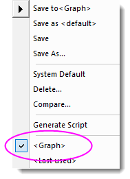
| Sie können mehrere Diagramme, z. B. alle Diagramme in einem Ordner oder in einem ganzen Projekt, in eine einzelne, mehrseitige PDF-Datei exportieren. Wählen Sie Datei: Grafiken exportieren und öffnen Sie den Dialog Grafiken exportieren. Setzen Sie den Bildtyp auf Portable Document Format (*.pdf) und Diagramm(e) auswählen auf eine der folgenden Optionen und Sie werden sehen, dass das Kontrollkästchen Als mehrseitige PDF-Datei exportieren aktiviert ist.
- 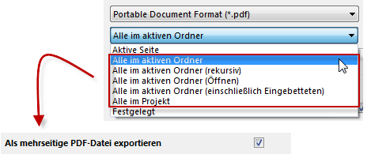
|
Browserdiagramme in Video exportieren
Um ein Browserdiagramm als Video (GIF, TIFF, AVI) zu exportieren:
- Aktivieren Sie das Browserdiagramm. Bevor Sie weitermachen, prüfen Sie, dass das Diagramm sich in der Seitenansicht befindet (klicken Sie dazu unter die Fenstertitelleiste und prüfen Sie, wenn die Minisymbolleiste angezeigt wird, dass sich neben der Schaltfläche Fensteransicht kein rotes Häkchen befindet. Falls dort eines ist, entfernen Sie es).

- Klicken Sie im Bedienfeld links auf die Menüschaltfläche 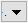 und wählen Sie Durchblättern.
- Klicken Sie auf die Schaltfläche Export und setzen Sie Dateityp = GIF, TIFF oder AVI.
- Passen Sie die anderen Einstellungen nach Bedarf an und klicken Sie auf OK. Falls die Option nicht deaktiviert ist, legt der Export einen anklickbaren Link im Meldungsprotokoll ab. Klicken Sie auf den Link, um das Video in der unterstützenden Anwendung auszuführen.

Bilder in ein Raster oder eine Videodatei exportieren
Mit Hilfe von Datei: Bild exportieren (X-Funktion = cvExport) Bildfenster können Sie Bilder in eines von mehreren Rasterformaten exportieren: BMP, GIF, JPG, PNG, TIF.
Um ein (Bildfenster) Bild mit Hilfe von cvExport zu exportieren:
- Wählen Sie bei aktivem Bildfenster Bild: Bild exportieren.
- Wählen Sie aus der Liste der Rasterbilder oder speichern Sie eine Videodatei (*.avi).
- 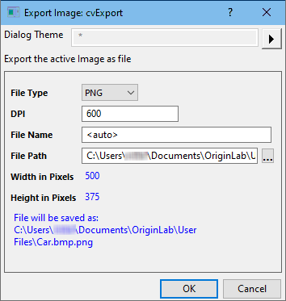
Nach dem Exportieren wird ein anklickbarer Link im Meldungsprotokoll erzeugt.
Matrizen exportieren
Matrix als ASCII exportieren
Diese Option erstellt eine ASCII-Datei der Daten, die im aktiven Matrixobjekt enthalten sind.
- Wählen Sie bei aktiver Matrix Datei: Export: ASCII.
Matrix als NetCDF exportieren
Dies exportiert alle Objekte in der aktiven Matrix in eine .nc-Datei:
- Wählen Sie bei aktiver Matrix Datei: Export: NetCDF.
- Beachten Sie bei Basisjahr für jahresübergreifende Abtastung, dass die Zeitvariable nicht mit der NetCDF-Datei exportiert wird, wenn der Durchschnitt der Matrixdaten über die Jahre ermittelt wird. Verwenden Sie diese Option, um festzulegen, wie Zeit kennzuzeichnen ist:
- 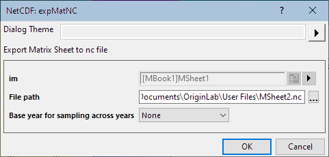
| Kein |
Es wird keine Zeitvariable festgelegt. |
| Anfangsjahr verwenden |
Anfangsjahr als Zeitvariable verwenden |
| Endjahr verwenden |
Endjahr als Zeitvariable verwenden |
Weitere Informationen zum Export von NetCDF-Daten finden Sie in der Origin-Hilfedatei.
Matrix als Bild exportieren
Matrixbilder können mit Hilfe von Datei: Export: Bild (X-Function = expImage) exportiert werden.
Um ein Matrixbild in eine Rasterdatei zu exportieren, einschließlich graustufiges GeoTIFF:
- Wählen Sie bei aktiver Matrix Datei: Export: Bild.
- Überprüfen Sie, dass der Dateityp korrect ist. Für GeoTIFF-Daten sollte das TIF/TIFF-Format vorausgewählt sein. Um sie jedoch als graustufige GeoTIFF zu exportieren, aktivieren Sie das Kontrollkästchen ls graustufiges GeoTIFF exportieren.
- 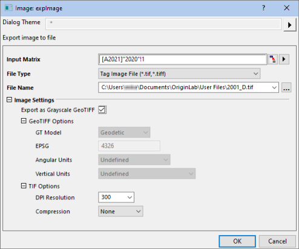
Nach dem Exportieren wird ein anklickbarer Link des exportierten Dateipfads im Meldungsprotokoll erzeugt.
Matrix als Video exportieren
Matrizen, die mehrere Matrixobjekte enthalten, können in GIF, TIF und AVI exportiert werden (X-Funktion = expm2video).
- 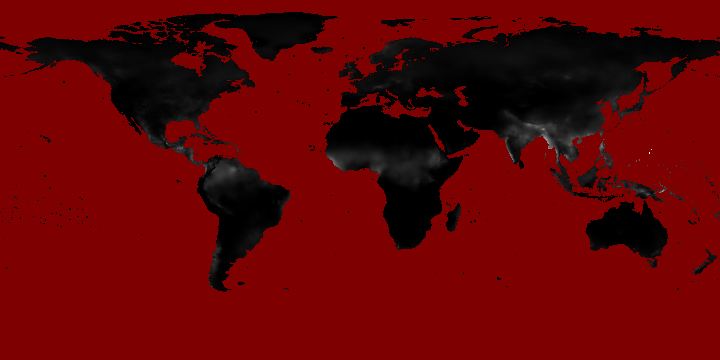
Um eine Reihe von Matrixobjekte als Videodatei zu exportieren:
- Wählen Sie bei aktiver Matrix Datei: Export: Video.
- 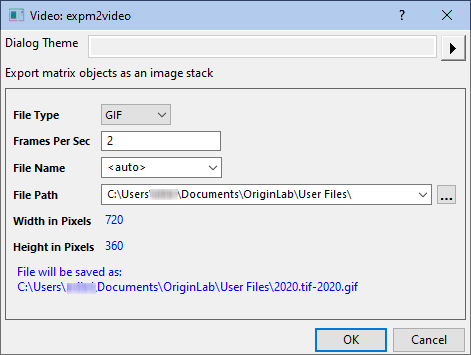
Arbeitsblätter exportieren
Arbeitsblätter, Exportieren Arbeitsblätter exportieren
Bei aktivem Arbeitsblatt bietet der Menübefehl Datei: Export die folgenden Optionen:
Als ASCII, NI TDM (TDM, TDMS) und Sound (WAV)
Diese gelten nur für Blätter, die Datenspalten enthalten, und sind nicht verfügbar für Analyseberichtsblätter (siehe weitere Optionen unten). Die exportierte Datei enthält nur Daten aus Arbeitsblattspalten. Frei bewegliche oder eingebettete Diagramme, die im Arbeitsblatt platziert sind, werden ignoriert.
Als Excel
Exportieren Sie die Mappen der Arbeitsblattspalten mit den Text- und numerischen Daten in eine MS-Excel-Datei (XLS, XSLX, XSLM). Beachten Sie, dass die Analyseberichtsblätter mit ihren hierarchischen Tabellen und Elemente wie eingebettete Diagramme und Bilder nicht in die Excel-Datei exportiert werden. Analyseergebnisse, die in üblichen Origin-Arbeitsblättern ausgegeben werden, werden exportiert.
- Wählen Sie bei aktivem Arbeitsblatt Datei: Export: Excel.
- Setzen Sie im aufgerufenen Dialog Blätter exportieren auf Gesamte Mappe oder Nur aktives Blatt.
- Aktivieren Sie optional das Kontrollkästchen Zellenformate exportieren, um numerische und Stilformate (Dezimalstellen, Schrift, Hintergrundfarbe etc.) zu exportieren.
- 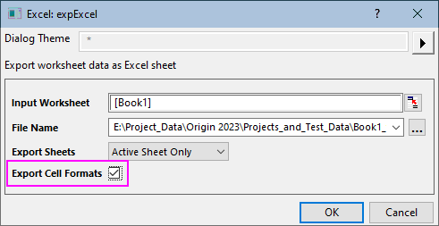
Als SQLite
Diese Option exportiert die aktiven Arbeitsblätter als eine SQLite-Datei. Legen Sie eine Dateierweiterung von .sqlite, .sqlite3 oder .db fest (Achten Sie darauf, dass die Dateistruktur identisch ist). Optionen zum Überspringen von verborgenen Spalten oder Zeilen. Beschränkt auf den Export von Daten in Arbeitsblattspalten.
Als mehrseitige PDF-Datei
Diese Option ist nur auf Blättern mit Datenspalten verfügbar und nicht für Analyseberichtsblätter. Verwenden Sie den Menübefehl Ansicht: Seitenumbruch in Druckvorschau, um die vertikalen und horizontalen Seitenumbruchslinien anzuzeigen, die bestimmen, welche Spalten und Zeilen auf jeder Seite des Exports eingeschlossen sind. Frei bewegliche oder eingebettete Diagramme, die in dem Arbeitsblatt platziert sind, sind in dem exportierten Bild enthalten.
Als Bilddatei
Diese Option ist für sowohl Daten- als auch Analyseberichtsblätter verfügbar.
- Wählen Sie bei aktivem Arbeitsblatt Datei: Export: Als Bilddatei.
- In dem aufgerufenen Dialog
- werden Bilddateiformate, einschließlich PDF und SVG, unterstützt.
- Frei bewegliche oder eingebettete Diagramme, die in dem Arbeitsblatt platziert sind, sind in dem exportierten Bild enthalten.
- Setzen Sie den Exportbereich auf Sichtbar, Gesamt oder Auswahl. Beachten Sie, dass leere Zeilen nicht mehr exportiert werden, wenn Exportbereich = Gesamt.
- Der Rahmen wird per Standard zum exportierten Arbeitsblatt hinzugefügt. Ändern Sie die Rahmendicke oder entfernen Sie den Rahmen. Sie können die Rahmendicke in der Auswahlliste festlegen.
- 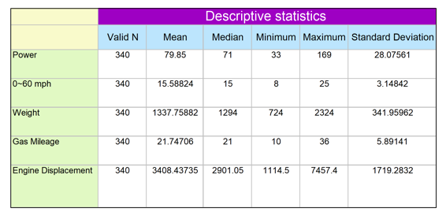
Als PDF-Datei
Diese Option ist für sowohl Daten- als auch Analyseberichtsblätter verfügbar. In dem aufgerufenen Dialog können Sie auswählen, ob das gesamte Blatt, der sichtbare Bereich oder eine Auswahl exportiert werden soll. Frei bewegliche oder eingebettete Diagramme werden in die exportierte PDF-Datei eingeschlossen.
| Beim Erstellen eines benutzerdefinierten Berichts basierend auf einem Arbeitsblatt, das Daten, numerische Ergebnisse und Diagramme kombiniert, besteht die beste Option darin, das gesamte Blatt als eine PDF-Datei oder das Blatt als eine mehrseitige PDF-Datei zu exportieren. |
Grafiken an PowerPoint senden
Grafiken, An PowerPoint senden PowerPoint, Exportieren in Sie können eine Gruppe von Origin-Diagrammen an MS PowerPoint als Bilder oder als eingebettete Objekte senden (siehe Einschränkungen der eingebetteten Objekte und Master Items, wie oben beschrieben). Diagramme, die als eingebettete Objekte eingefügt sind, können in Ihrer Origin-Software weiter bearbeitet werden. Klicken Sie dann doppelt auf das Diagramm, um das Diagramm in einer OLE-Instanz von Origin zu öffnen.
Grafiken an PowerPoint senden
- Klicken Sie auf die Schaltfläche Grafiken an PowerPoint senden
 in der Symbolleiste Standard.
in der Symbolleiste Standard.
oder ...
- Klicken Sie auf das Symbol Send Graphs to PowerPoint 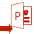 in der Apps-Galerie, die rechts von Ihrem Origin-Arbeitsbereich angesiedelt ist (wenn Sie die Apps-Galerie nicht sehen, klicken Sie auf Ansicht: Apps oder drücken Sie ALT + 9).
oder ...
- Klicken Sie mit der rechten Maustaste in das untere Bedienfeld des Projekt Explorers und wählen Sie Grafiken an PowerPoint senden.
 |
Tutorial: Send Graphs to PowerPoint
- Führen Sie Origin aus und öffnen Sie die Sample-Datei <Origin-Ordner>\Samples\Graphing\Column and Bar.opju.
- Klicken Sie auf die Schaltfläche Grafiken an PowerPoint senden in der Symbolleiste Standard.
- Klicken Sie auf die Schaltfläche Diagramm(e) auswählen und wählen Sie Festgelegt.
- Wählen Sie alle außer Graph5B im linken Bedienfeld und verschieben Sie sie ins rechte Bedienfeld, indem Sie auf 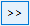 in der Mitte des Dialogs klicken. Klicken Sie auf OK. Es wird eine scrollbare Liste der Diagramme zum linken Bedienfeld in der App hinzugefügt.
- Setzen Sie Insert Graph as = Picture.
- Setzen Sie die obere Dimension von Slide Margin auf 8 % und belassen Sie die anderen auf 0.
- Setzen Sie die Title Line = Top of Slide und den Title = Fensterlangname.
- Setzen Sie Startfolienindex = 3 und den Folienmodus = Neue öffnen.
- Verwenden Sie die Schaltfläche Durchsuchen neben Load File/Template (optional), um die Datei <Origin EXE Folder>\Samples\Import and Export\Column_Plots_in_Sample_OPJ.pptx zu laden.
- Legen Sie einen Ausgabepfad für Save File as (optional) für die sich ergebende PPTX-Datei fest.
|
Slide-Show der Grafiken
Grafiken, Slide-Show Slide-Show der Grafiken Origin verfügt über ein integriertes Hilfsmittel zum Erstellen einer Slide-Show, die Ihre Diagramme, während Origin ausgeführt wird, anzeigt und präsentiert. Es gibt zwei Möglichkeiten, um die Slide-Show aufzurufen:
- Klicken Sie mit der rechten Maustaste auf einen beliebigen Ordner im Projekt Explorer und wählen Sie Slide-Show der Grafiken.
oder
- Klicken Sie auf die Schaltfläche Slide-Show der Grafiken 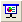 auf der Symbolleiste Standard.
Es wird ein Dialog geöffnet, in dem Sie Optionen zum Festlegen der Folienreihenfolge, der Zykluszeit, dem Einfügen von Diagrammen in Unterordner usw. finden. Der Dialog listet auch Tastenkombinationen auf, die während der Slide-Show verwendet werden können (z.B. G = Zu dem tatsächlichen Diagrammfenster der aktuell angezeigten Folie gehen).
|
Tutorial: Slide-Show der Diagramme
- Verwenden Sie das Menü Datei: Sample-Projekt öffnen: 2D- und Konturdiagramme, um das Sample-Projekt zu öffnen.
- Klicken Sie auf die Schaltfläche Slide-Show der Grafiken in der Symbolleiste Standard.
- Übernehmen Sie die Standardeinstellungen in dem sich öffnenden Dialog und klicken Sie auf OK, um die Slide-Show zu starten.
- Sie können die Pfeiltasten für Aufwärts/Abwärts oder das Scrollrad verwenden, um durch die Folien zu blättern.
|
Animationen erstellen
Diagramme, Animationen erstellen aus Animationen aus Diagrammen erstellen Videos, Animationen aus Diagrammen erstellen Animation erstellen Origin enthält das Hilfsmittel Animationen erstellen, auf das Sie über die Schaltfläche Animation erstellen  auf der Symbolleiste Standard zugreifen können. Dieses Hilfsmittel kann verwendet werden, um manuell eine Reihe von Diagrammfenstern zu erfassen und diese in jeweils einen Frame einer .AVI-Datei zu schreiben.
auf der Symbolleiste Standard zugreifen können. Dieses Hilfsmittel kann verwendet werden, um manuell eine Reihe von Diagrammfenstern zu erfassen und diese in jeweils einen Frame einer .AVI-Datei zu schreiben.
Animationen können mit Hilfe von LabTalk-Skript oder Origin C-Code erstellt werden. Dazu werden zunächst Daten programmatisch berechnet oder aktualisiert. Danach wird das Diagramm bei jedem Schritt der Berechnung als Frame in die Animation eingefügt.
| Hinweis: Weitere Informationen finden Sie unter: Hilfe: Origin: Origin-Hilfe > Exportieren und Veröffentlichen von Diagrammen > Animation erstellen
|
| Spezielle Beispiele für per Programm erstellte Animationen, einschließlich Origin-Projekte und Code, stehen unter www.originlab.com/animation bereit. |
Notizfenster für Reporting
Über die Zeit hat sich Origins Notizfenster von einem Klartextfenster zum Festhalten Ihrer Forschungsnotizen in ein flexibles Medium zum Zusammenstellen einer Vielzahl von forschungsrelevanten Materialien entwickelt.
Da das Notizfenster verknüpfte Objekte enthalten kann -- Diagramme, Bilder, Werte in Arbeitsblattzellen etc. --, kann es sich das Hinzufügen eines Notizfensters zu einem Analyse-Template™ als nützlich erweisen, um die Analyseergebnisse zusammenzufassen. Alternativ können Sie Ihre Notizfenster als eine PDF speichern, indem Sie auf Datei: Drucken klicken und einen PDF-Treiber auswählen.
Syntax des Notizfensters
Origins Notizfenster unterstützt vier Syntaxen: Text, Origin Rich Text (Standard), HTML und Markdown.
- Um die Syntax zu wechseln, wählen Sie Notizen: Syntax: Text.
- Wenn Sie Text ausgewählt haben, können Sie eine der anderen Syntaxen frei im Menü Notizen auswählen.
Rich Text
Mit Rich Text hat das Notizfenster zwei Modi -- den Rohtextmodus und den Rendermodus. Wechseln Sie zwischen diesen Modi über Notizen: Rendermodus oder die Tastenkombination Strg + M.
Um Text in das Notizfenster einzufügen, müssen Sie im Rohtextmodus sein. Um den Stil des hinzugefügten Texts zu bearbeiten, verwenden Sie die Symbolleiste Format und/oder wenden Sie vordefinierte Absatzstile an.
- 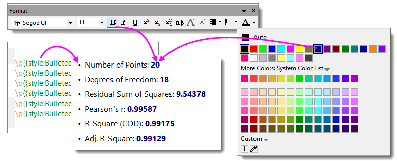
Inhalt zu Ihren Notizen hinzufügen
Sie können diese Objekte in das Notizfenster einfügen, indem Sie mit der rechten Maustaste in das Notizfenster klicken und im Kontextmenü wählen:
- 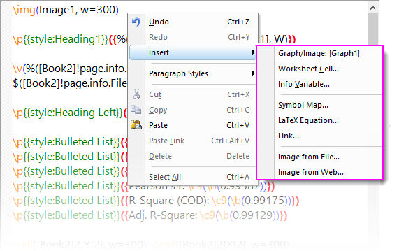
| Objekt |
Kommentare |
| Diagramm/Bild |
Öffnet den Diagramm-/Bildbrowser, in dem Sie Projektdiagramme und -bilder auswählen können. Beachten Sie, dass Sie eingebettete Diagramme (siehe eine Definition des "eingebetteten Diagramms" in der ersten Zeile dieser Tabelle) und Shortcuts im "Favoriten"ordner des Projekt Explorers (Shortcut-Seite einschließen) zeigen können. |
| Arbeitsblattzelle ... |
Öffnet die interaktive Bereichsauswahl. Verwenden Sie diese Option, um einen Zellenwert in einem Arbeit- oder Berichtsblatt auszuwählen. Klicken Sie auf Fertig, um einen verknüpften Zellenwert einzufügen. |
| Infovariable ... |
Öffnet den Dialog Variablen einfügen, um beim Datenimport gespeicherte Projektvariablen einzufügen. |
| Neue Tabelle |
Öffnet den Dialog Neue Tabelle zum Konfigurieren einer einfachen Tabelle. Klicken auf OK schließt den Dialog und öffnet eine einfache Arbeitsmappe, die ein einzelnes Arbeitsblatt enthält. Passen Sie das Arbeitsblatt an, fügen Sie Daten hinzu etc., verwenden Sie dann den Rendermodus des Notizfensters, um die Ergebnistabelle anzuzeigen. |
| Abbildung Symbole |
Dies öffnet den vereinfachten Dialog Abbildung Symbole mit Zeichen, die nach Registerkarten sortiert sind. Klicken Sie auf Erweitert, um zur vollständigen Abbildung der Symbole zu gehen. |
| LaTeX-Gleichung |
Öffnet die App LaTeX Equation Editor (falls Sie diese kostenlose App nicht bereits installiert haben, werden Sie aufgefordert, dies nachzuholen). Sie können auf die Schaltfläche Gleichung  klicken, um eine Liste von Origins Anpassungsfunktionen (inkl. Ihrer benutzerdefinierten Funktionen) zu öffnen. Wählen Sie eine Funktion (oder geben Sie eine Funktion in das obere Feld ein) und klicken Sie auf Vorschau, um Ihre Gleichung gerendert zu sehen. klicken, um eine Liste von Origins Anpassungsfunktionen (inkl. Ihrer benutzerdefinierten Funktionen) zu öffnen. Wählen Sie eine Funktion (oder geben Sie eine Funktion in das obere Feld ein) und klicken Sie auf Vorschau, um Ihre Gleichung gerendert zu sehen. |
| Verknüpfen |
Öffnet einen Dialog zum Eingeben des anzuzeigenden Textes und eines Links. Der Link kann eine URL oder ein Link zu Elementen wie einem Arbeitsblattdatenbereich sein (z. B. range://[book1]sheet1!col(1)[100]). Zusätzlich können Sie einfache LabTalk-Befehle mit dem Tag "labtalk://" ausführen (z. B. labtalk://newsheet). |
| Bild aus Datei |
Öffnet einen Dialog zum Durchsuchen von Bilddateien. Beachten Sie, dass das eingefügte Bild mit einer externen Datei verknüpft ist und nicht mit dem Projekt gespeichert wird. |
| Bild aus Web |
Öffnet einen Dialog, um einen Bildlink für ein Web-Bild festzulegen (Hinweis: Klicken Sie in Ihrem Browser mit der rechten Maustaste auf ein Bild und dann auf Bildadresse kopieren, Bildlink kopieren etc). |
- Fügen Sie Ihren Inhalt unter Verwendung des Rohtextmodus' hinzu.
- Wenn Sie bereit sind, Ihren Inhalt anzusehen, aktivieren Sie (durch ein Häkchen daneben) Notizen: Rendermodus oder drücken Sie Strg + M. Beachten Sie, dass Sie das Kombinationsfeld Zoom
 auf der Standardsymbolleiste verwenden können, um in die Seite hinein- oder aus ihr herauszuzoomen (Strg + Mausrad funktioniert ebenso).
auf der Standardsymbolleiste verwenden können, um in die Seite hinein- oder aus ihr herauszuzoomen (Strg + Mausrad funktioniert ebenso).
- 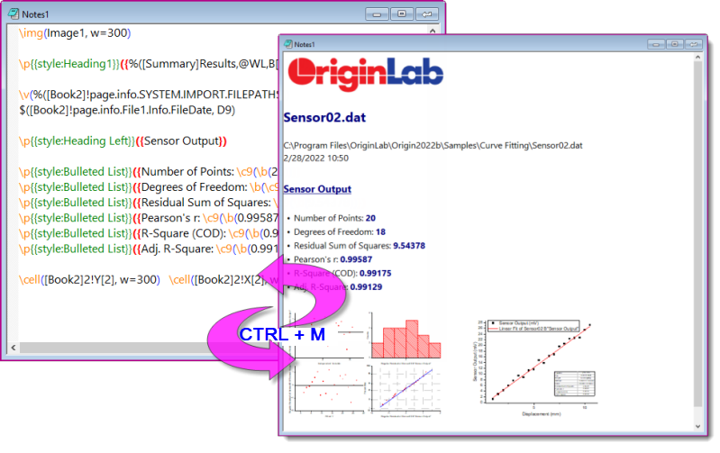
Textstile verwalten
Zusätzlich zum Bearbeiten des Textstils mit der Symbolleiste Format können Sie einen einfachen Satz von Absatzstilen auf Zeilenbasis anwenden. Verwalten Sie Stile mit dem Dialog Textstile verwalten.
- Wählen Sie bei aktivem Arbeitsblatt Hilfsmittel: Textstile verwalten.
- Wählen Sie einen zu modifizierenden Stil und dann Anwenden oder Schließen.

Beachten Sie, dass Sie Stile durch Auswahl von <neu> in der Auswahlliste Zu modifizierende Stile hinzufügen können oder einen Stil auswählen und löschen.
Um einen Absatzstil auf einen Text im Notizfenster anzuwenden:
- Öffnen Sie die Zellennotiz in einem Notizfenster.
- Klicken Sie bei inaktivem Rendermodus (Umschalten mit Strg + M) auf eine Textzeile. Klicken Sie dann mit der rechten Maustaste und wählen Sie erst Absatzstile und dann einen Stil aus dem Popupmenü.
- Um die Ergebnisse zu prüfen, drücken Sie Strg + M (Rendermodus).
| Um eine Liste der Standardabsatzstille anzusehen, öffnen Sie ein neues Notizfenster und wählen Sie dann im Menü Notizen: Beispiele laden: Built-in Styles.txt. |
Rich-Text-Inhalt zu Layout oder Diagramm hinzufügen
Sie können den Rich-Text-Inhalt eines Notizfensters zu einem Textobjekt auf einer Layout- oder Diagrammseite hinzufügen.
- 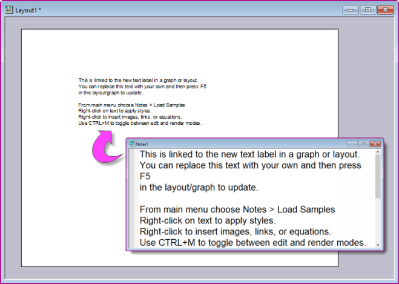
Um den Inhalt einer existierenden Notiz (Layout oder Diagramm) hinzuzufügen:
- Wählen Sie das Hilfsmittel Text einfügen
 , kicken Sie dann auf das Layout/Diagramm und geben Sie "@@@NotesN" ein (d. h. den Kurznamen des Notizfensters).
, kicken Sie dann auf das Layout/Diagramm und geben Sie "@@@NotesN" ein (d. h. den Kurznamen des Notizfensters).
- Klicken Sie auf das Textobjekt, um den Notizinhalt einzufügen.
Um Inhalt durch Erstellen einer neuen Notiz (nur Layout) hinzuzufügen:
- Klicken Sie mit der rechten Maustaste auf das Layout und wählen Sie Notiztext einfügen.
- Siehe Inhalt zu Ihren Notizen hinzufügen.
Drucken oder in PDF exportieren
Sie können Rich-Text-Inhalt auf einem physischen Drucker ausgeben oder ihn mit Hilfe des Treibers eines Drittanbieters, wie Microsoft Print to PDF, in einem PDF drucken.
Um eine attraktive Ausgabe zu erreichen, müssen Sie auf diese Einstellungen achten:
- Papiergröße: Dies legen Sie in Datei: Seite einrichten oder in den Erweiterten Optionen für Ihren Druckertreiber fest.
- Ränder: Sie werden unter Datei: Seite einrichten festgelegt.
- Anzeigerand der Notizen: Per Standard ist der Anzeigerand der Notizen = 5 (Einheiten = Punkte). Sie werden daher feststellen, dass es im Rendermodus (Strg + M) eine schmalen Rand links von der Notizen gibt. Dieser Anzeigerand wird über die Systemvariable @NDM gesteuert.
- Seitenbreite des Notizfensters: Die Seitenbreite wird von der Eigenschaft
note.width (Einheiten = in/cm etc) gesteuert. Standardwert = 0, was einer nicht festgelegten Breite entspricht.
- Wenn die Breite nicht gesteuert wird (
note.width = 0), ist die Seitenbreite des Notizfensters ungefähr gleich der Papiergröße – Rändern. Dies sollte einen zufriedenstellenden Ausdruck in PDF oder auf Papier erstellen.
- Wenn Sie
note.width festlegen, überschreiten Sie nicht Papiergröße – Ränder, sonst wird Ihr Text eventuell abgeschnitten.
HTML und Markdown
Sie können auch das Notizfenster verwenden, um HTML- oder Markdown-Berichte zu erstellen. Wie bei Rich Text können Sie Ihren HTML-Bericht mit Hilfe von Platzhaltern erstellen, die zu Berichtsblattelementen wie Metadaten, statistischen Ergebnisse oder Diagrammen verlinken. Der resultierende HTML-Bericht kann gedruckt oder exportiert werden oder er kann in Ihre Analysevorlage eingebunden werden. Wenn Markdown verwendet wird, kann HTML optional für die erweiterte benutzerdefinierte Anpassung eingeschlossen werden.
Um diese Funktion zu verwenden, sollte der Anwender mit den Grundlagen von HTML bzw. Markdown vertraut sein. Wie bei den meisten Dingen gilt auch hier, je geübter ein Anwender ist, desto einfach wird es für ihn sein, professionell aussehende Ausgaben zu erzeugen. Allerdings kann die Fähigkeit, die es braucht, um einen einfachen Bericht zu erstellen, leicht erworben werden. Aneisungen finden Sie in diesen Blogeintrag von OriginLab.
- 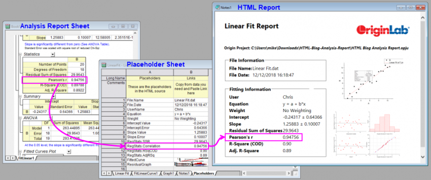
Inhalt zu Ihrem HTML-Bericht hinzufügen
Die grundlegenden Schritte zum Erstellen von Berichten mit Hilfe eines Origin-Notizfensters sind die folgenden:
- Erstellen Sie Ihr Projekt und schließen Sie Grafik- und Analyseergebnisse ein.
- Klicken Sie auf die Schaltfläche Neue Notizen
 , um ein neues Notizfenster zu erstellen.
, um ein neues Notizfenster zu erstellen.
- Wählen Sie im Menü Notizen: Syntax, dann HTML oder Markdown (Hinweis: Sie können zwischen Text/Ansicht und Markup-Modi durch Drücken von STRG+M wechseln und die Standardsyntax durch Festlegen der LabTalk-Systemvariablen @NPS wählen).
- Sie können Ihren Code im Mae Yo u can write your code in the Notes window's markup mode or you can use a text editor such as Notepad++, then copy and paste it to your Notes window. Wenn Sie keine Erfahrung mit HTML oder Markdown haben, möchten Sie vielleicht Beispiele laden, indem Sie Ihr Notizfenster aktivieren und auf Notizen: Beispiele laden klicken (HTML = ".html", Markdown = ".md").
- Sie werden wahrscheinlich die Grafik- und Analyseergebnisse Ihres aktuellen projekts in Ihren Bericht einbinden wollen. Der einfachste Weg, dies zu tun, besteht darin, in Ihrem Code "Platzhalter" für jedes Origin-Objekt, das Sie in Ihren Bericht einbinden möchten, einzufügen. Diese Platzhalter können mittels jeder Zeichenkette, die Ihnen sinnvoll erscheint, benannt werden und sie sollten in doppelten geschweiften Klammern stehen (z. B.
{{MyR-SquareValue}}).
- Klicken Sie mit der rechten Maustaste auf die Titelleiste des Notizfensters und wählen Sie Platzhalter bearbeiten. Platzhalter, die Sie in Ihren Code eingebunden haben, wird ausgewählt und zu einem Arbeitsblatt Platzhalter in der Arbeitsmappe hinzugefügt. Das Blatt listet in Spalte A alle Platzhalter auf, die in Ihrem Code gefunden wurden. Eine zweite Spalte -- Spalte B -- ist leer und zum Hinzufügen der verbundenen Origin-Objekte reserviert (d. h. Variablen, Analyse- und Grafikergebnisse etc.), die Sie in Ihrem Bericht einschließen möchten.
- Suchen Sie für jeden Platzhalter in Spalte A das zugehörige Origin-Objekt und kopieren Sie es in die Zwischenablage (wenn es sich z. B. um eine numerische Eigenschaft in einem Blatt handelt, die sich aus einer statistischen Analyse ergibt, markieren Sie die Zelleneigenschaft, klicken Sie mit der rechten Maustaste und wählen Sie Kopieren oder drücken Sie Strg+C auf Ihrer Tastatur).
- Kehren Sie zurück zum Blatt Platzhalter, klicken Sie mit der rechten Maustaste in Spalte B neben dem zugehörigen Platzhalter und wählen Sie Verknüpfung einfügen. Dies verbindet Ihren Platzhalter mit dem bestimmten Origin-Objekt.
- Wenn Sie beabsichtigen, Ihren HTML-Bericht in eine Analysevorlage einbinden möchten, können Sie mit der rechten Maustaste auf einen Arbeitsmappenreiter in Ihrer Analysevorlage klicken und Notizen als Blatt hinzufügen wählen. Dies fügt Ihr Notizfenster in die Arbeitsmappe ein, und Sie können jetzt Datei: Arbeitsmappe als Analysevorlage speichern wählen.
| Wenn ein Notizfenster aktiv ist, können Sie im Menü Notizen auswählen und eine HTML-Beispieldatei in das Notizfenster laden.
- 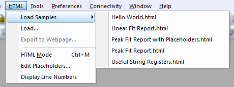
|
Ihren HTML-Bericht verwenden
Während Sie Ihr Platzhalterblatt füllen, sollten Sie sehen, wie Ihr HTML-Bericht im Notizfenster Form annimmt. Sobald es fertiggestellt ist, können Sie verschiedene Dinge mit Ihrem HTML-Bericht tun, einschließlich:
- Papierausdruck oder PDF ausdrucken (Datei: Drucken).
- Fenster als Webseite exportieren (Notizen: In Webseite exportieren).
- Klicken Sie auf die Schaltfläche Einbetten in der oberen rechten Ecke des Notizfensters, um den Inhalt in Ihre Arbeitsmappe einzubetten. Speichern Sie dann die Arbeitsmappe als eine Analysevorlage (Datei: Arbeitsmappe als Analysevorlage speichern).
Weiterführende Themen